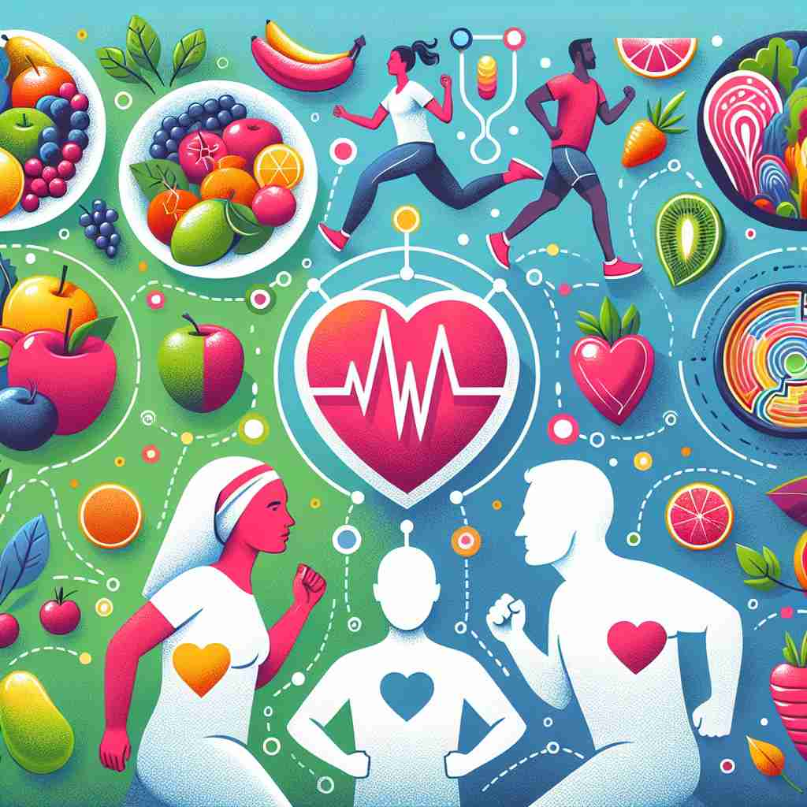

💬 She exercises regularly to maintain good health. 她定期锻炼以保持良好的健康。

💬 The doctor assures the patient that he is in good health. 医生向病人保证他的健康状况良好。
💬 Exercising regularly can help promote good health. 定期锻炼有助于促进身体健康。

💬 To feel good, it is essential to maintain a healthy lifestyle. 要感觉良好，保持健康的生活方式至关重要。
🧠 理解'health'的关键在于把握'身心状况'这个核心含义。想象一个人的整体状态，包括身体和心理。从这个核心概念出发，我们可以延伸到具体的无病无灾状态，再扩展到其他事物的总体状况，甚至用作祝酒词。这种由内而外、由具体到抽象的联想，有助于更全面地掌握'health'的各种用法。
🔈 [helθ]
🗝️ n. the condition of a person's body and mind 一个人身体和心理的状况
🎭 想象一个瑜伽课上，几位学员正在专注地练习调息和冥想。老师轻声引导他们注意自己的身体与内心状态，感受平衡与和谐。这一课堂场景展现了'health'作为身体和心理状况的含义。
💬 Regular exercise is good for your health. 定期锻炼有益于你的健康。
🌳 由词根 'heal'（治愈，康复）加上名词后缀 '-th' 组成，表示‘健康，健全’。
🕸️ 1. heal: 治愈 2. healthy: 健康的 3. healthcare: 医疗保健
💡 记忆 'health' 时，可以联想 'heal + th'，即 “治愈” 的状态，代表一种持续的健康状态。